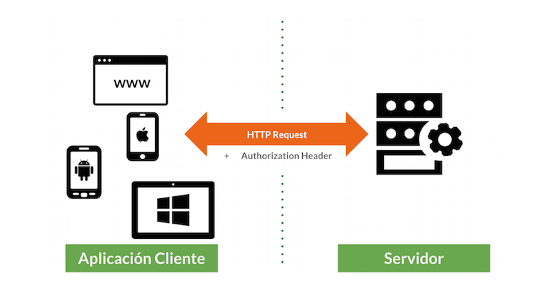
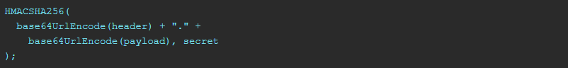

What is Token-based authentication?
There are several authentication systems in a web application. Next we will see the 2 most used versions together with their advantages and disadvantages.
Authentication on the server, storing the session
The most common one so far was the one that saved user information in a session. For this we needed to store that information in a database, it could be a collection of MongoDB or Redis.
However, this meant a loss of scalability in our application, since the server must store a record for each time the user authenticates in the system. We also make the Backend take care of it and in this way if we want to develop a mobile application, we would need another different backend, not being able to reuse it.
Stateless Authentication with Tokens
Therefore, one of the new trends in modern web development is authentication through Tokens and our backend is a RESTful API without status information, stateless.
The operation is as follows. The user authenticates in our application, either with a user / password pair, or through a provider such as Twitter, Facebook or Google for example. Thereafter, each HTTP request made by the user is accompanied by a Token in the header. This Token is nothing more than an encrypted signature that allows our API to identify the user. But this Token is not stored on the server, but on the client side (for example in localStorage or sessionStorage) and the API is responsible for deciphering that Token and redirecting the flow of the application in one way or another.
As the tokens are stored on the client side, there is no status information and the application becomes fully scalable. We can use the same API for different applications (Web, Mobile, Android, iOS, ...) we just have to worry about sending the data in JSON format and generate and decrypt tokens in the authentication and subsequent HTTP requests through a middleware.
It also adds more security. By not using cookies to store user information, we can avoid CSRF (Cross-Site Request Forgery) attacks that manipulate the session that is sent to the backend. Of course we can make the token expire after a while which adds an extra layer of security.
Authentication with JSON Web Tokens
The standard for this type of authentication is to use JSON Web Tokens (JWT). Like the APIs, the JSON format is language agnostic, and we can use the one we want (Node.js, Python, Ruby, PHP, .NET, Java, ...)
The format of a JWT is composed of 3 strings separated by a point.
ach string means one thing:
Header
The first part is the header of the token, which in turn has two other parts, the type, in this case a JWT and the encoding used. Commonly it is the HMAC algorithm SHA256, the content without coding is the following one:
Encoded would be: eyJhbGciOiJIUzI1NiIsInR5cCI6IkpXVCJ9
Payload
The Payload is made up of the so-called JWT Claims where the attributes that define our token will be placed. There are several that you can consult here, the most common to use are:
sub: Identifies the subject of the token, for example a user identifier.
iat: Identifies the date of creation of the token, valid if we want to set an expiration date. In UNIX time format.
exp: Identifies the expiration date of the token. We can calculate it from the iat. Also in UNIX time format.
We can also add more fields, even personalized, such as the user's role, etc.
Encoded would be: eyJzdWIiOiI1NGE4Y2U2MThlOTFiMGIxMzY2NWUyZjkiLCJpYXQiOiIxNDI0MTgwNDg0IiwiZXhwIjoiMTQyNTM5MDE0MiJ9
Signature
The signature is the third and final part of the JSON Web Token. It is formed by the previous components (Header and Payload) encrypted in Base64 with a secret key (stored in our backend). This serves as Hash to verify that everything is fine.
Encoded would be: yk4nouUteW54F1HbWtgg1wJxeDjqDA_8AhUPyjE5K0U
That if we check it on the web JWT.io we see that it translates it to the fields that we have seen.